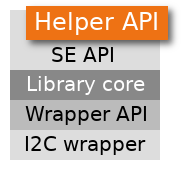

Helper API¶
These APIs are designed to make some complex Secure Element operations simpler.
#include <TO_helper.h>
ECIES sequence¶
The following functions are an easy-to-use ECIES sequence abstraction. They are to be called successively to complete the sequence. ECIES is a cipher suite standardized by ISO 18033.
Steps:
- authenticate TO
- authenticate remote device against TO
- prepare secure messaging
The two first steps are for mutual authentication between remote device and TO, to prevent man-in-the-middle attacks when messaging.
To complete the ECIES sequence, execute the functions below, in order.
To understand what are ‘short’ and ‘standalone’ certificates, please see Datasheet - Certificates description.
Authenticate TO¶
-
int
TO_helper_ecies_seq_auth_TO(uint8_t certificate_index, uint8_t challenge[TO_CHALLENGE_SIZE], uint8_t TO_certificate[sizeof(TO_cert_short_t)], uint8_t challenge_signature[TO_SIGNATURE_SIZE])¶ ECIES sequence (1st step): authenticate Secure Element.
This is the ECIES sequence first step, which aims to authenticate Secure Element. It provides a challenge to Secure Element, and get back its certificate and the challenge signed using the private key associated to the certificate.
- Parameters
certificate_index: Index of the Secure Element certificate to usechallenge: Challenge (randomly generated) to be provided to the Secure ElementTO_certificate: Short certificate returned by Secure Elementchallenge_signature: Signature of the challenge by Secure Element
Refer to Secure Element Datasheet Application Notes - Authenticate Secure Element (and also optimized scheme).
Before call you need to:
- randomly generate a challenge After call you need to:
- check return value (see below)
- verify Secure Element certificate signature using CA public key
- verify challenge signature using Secure Element certificate public key if previous steps are validated, continue with the next ECIES step: TO_helper_ecies_seq_auth_remote_1() to authenticate the remote device.
- Return
- TO_OK if this step is passed successfully.
Authenticate remote¶
-
int
TO_helper_ecies_seq_auth_remote_1(uint8_t ca_pubkey_index, uint8_t remote_certificate[sizeof(TO_cert_standalone_t)], uint8_t challenge[TO_CHALLENGE_SIZE])¶ ECIES sequence (2nd step): authenticate remote device against Secure Element (part 1)
This is the ECIES sequence second step, which aims to authenticate remote device (server or other connected object). This first part provides remote device certificate to Secure Element, and get back a random challenge which is going to be used later to authenticate remote device.
- Parameters
ca_pubkey_index: Index of Certificate Authority public keyremote_certificate: Remote device standalone certificatechallenge: Challenge returned by Secure Element to authenticate remote device
There is only one remote certificate at a time. If several shared keys are needed, we can overwrite remote certificate after shared keys computing.
Refer to Secure Element Datasheet Application Notes - Authenticate Remote Device.
Before call you need to:
- have completed previous ECIES sequence steps
- have the remote device certificate After call you need to:
- check return value (see below)
- sign the returned challenge using the remote device certificate private key if previous steps are validated, continue with TO_helper_ecies_seq_auth_remote_2() to finalize remote device authentication.
- Return
- TO_OK if this step is passed successfully, else:
- TORSP_BAD_SIGNATURE: the remote device certificate CA signature is invalid
-
int
TO_helper_ecies_seq_auth_remote_2(uint8_t challenge_signature[TO_SIGNATURE_SIZE])¶ ECIES sequence (2nd step): authenticate remote device against Secure Element (part 2)
This is the ECIES sequence second step, which aims to authenticate remote device (server or other connected object). This second part provides challenge signed using remote device certificate private key.
- Parameters
challenge_signature: Challenge signed using remote device certificate private key
Refer to Secure Element Datasheet Application Notes - Authenticate Remote Device.
Before call you need to:
- have completed previous ECIES sequence steps
- compute the challenge signature After call you need to:
- check return value (see below) if previous steps are validated, continue with TO_helper_ecies_seq_secure_messaging().
- Return
- TO_OK if this step is passed successfully, else:
- TORSP_BAD_SIGNATURE: the challenge signature is invalid
Secure messaging¶
-
int
TO_helper_ecies_seq_secure_messaging(uint8_t remote_pubkey_index, uint8_t ecc_keypair_index, uint8_t remote_eph_pubkey[TO_ECC_PUB_KEYSIZE], uint8_t remote_eph_pubkey_signature[TO_SIGNATURE_SIZE], uint8_t TO_eph_pubkey[TO_ECC_PUB_KEYSIZE], uint8_t TO_eph_pubkey_signature[TO_SIGNATURE_SIZE])¶ ECIES sequence (3rd step): prepare secure data exchange.
This is the ECIES sequence third step, which aims to prepare secure messaging. Server and connected object will be able to securely exchange data. It provides remote device ephemeral public key signed using remote device certificate private key, and get back Secure Element ephemeral public key.
- Parameters
remote_pubkey_index: Index where the public key will be storedecc_keypair_index: Index of the ECC key pair to renewremote_eph_pubkey: Remote device ephemeral public keyremote_eph_pubkey_signature: Remote device ephemeral public key signatureTO_eph_pubkey: Returned Secure Element ephemeral public keyTO_eph_pubkey_signature: Secure Element ephemeral public key signature
Secure Element public keys, AES keys, and HMAC keys have the same index to use them from Secure Element APIs.
Refer to Secure Element Datasheet Application Notes - Secure Messaging.
Before call you need to:
- have completed previous ECIES sequence steps
- generate ephemeral key pair
- sign the ephemeral public key using remote device certificate private key After call you need to:
- check return value (see below)
- check Secure Element ephemeral public key signature using Secure Element certificate public key
- compute shared secret using remote device and Secure Element ephemeral public keys
- derive shared secret with SHA256 to get AES and HMAC keys
If previous steps are validated, AES and HMAC keys can be used for secure messaging.
- Return
- TO_OK if this step is passed successfully, else:
- TORSP_BAD_SIGNATURE: the remote device public key signature is invalid
TLS handshake¶
Handshake¶
-
int
TO_helper_tls_handshake_init(void)¶ Initialize TLS handshake.
This function initialize TLS handshake. It configures the Secure Element and initialize static envrionment.
- Return
- TO_OK if initialization succeed, else TO_ERROR
-
int
TO_helper_tls_handshake(void * ctx, TO_helper_tls_handshake_send_func send_func, TO_helper_tls_handshake_receive_func receive_func)¶ Do TLS handshake.
This function does all the steps of a TLS handshake. It encapsulates TO payloads from optimized API in a TLS record, and send it on the network through given function. It decapsulates TLS records received from the network and send it to TO. This function uses
TO_helper_tls_handshake_initandTO_helper_tls_handshake_step.- Parameters
ctx: Opaque context to forward to given functionssend_func: Function to send on networkreceive_func: Function to receive from network
- Return
- TO_OK if data has been sent successfully, else TO_ERROR
-
int
TO_helper_tls_handshake_step(void * ctx, TO_helper_tls_handshake_send_func send_func, TO_helper_tls_handshake_receive_func receive_func)¶ Do TLS handshake step.
This function does one step of a TLS handshake. It encapsulates TO payloads from optimized API in a TLS record, and send it on the network through given function. It decapsulates TLS records received from the network and send it to TO.
- Parameters
ctx: Opaque context to forward to given functionssend_func: Function to send on networkreceive_func: Function to receive from network
- Return
- TO_AGAIN if intermediate step suceed, TO_OK if last step succeed, else TO_ERROR
Once handshake is done, these 2 functions will allow to send and receive with TLS encryption using just negociated session, and associated callbacks.
Send message¶
-
int
TO_helper_tls_send_message(uint8_t * msg, uint32_t msg_len, void * ctx, TO_helper_tls_handshake_send_func send_func)¶ Send TLS encrypted message.
This function uses TLS handshake keys to encrypt and send a message on the network through given function.
- Parameters
msg: Messagemsg_len: Message lengthctx: Opaque context to forward to given functionssend_func: Function to send on network
- Return
- TO_OK if message has been sent successfully, else TO_ERROR
Send callback¶
-
typedef int
(* TO_helper_tls_handshake_send_func)(void *ctx, const uint8_t *data, const uint32_t len)¶ Handshake helper network send function.
This function is used by “TO_helper_tls_handshake” to send data on the network.
- Parameters
ctx: Opaque context given to “TO_helper_tls_handshake”data: Data to sendlen: Length of data
- Return
- TO_OK if data has been sent successfully, else TO_ERROR
Receive message¶
-
int
TO_helper_tls_receive_message(uint8_t * msg, uint32_t max_msg_len, uint32_t * msg_len, void * ctx, TO_helper_tls_handshake_receive_func receive_func)¶ Receive TLS encrypted message.
This function uses given function to receive a message from the network and decrypts it with TLS handshake keys. *
- Parameters
msg: Message output buffermax_msg_len: Message output buffer lengthmsg_len: Receive message lengthctx: Opaque context to forward to given functionsreceive_func: Function to receive from network
- Return
- TO_OK if message has been sent successfully, else TO_ERROR
-
int
TO_helper_tls_receive_message_with_timeout(uint8_t * msg, uint32_t max_msg_len, uint32_t * msg_len, int32_t timeout, void * ctx, TO_helper_tls_handshake_receive_func receive_func)¶ Receive TLS encrypted message with timeout.
This function uses given function to receive a message from the network and decrypts it with TLS handshake keys. *
- Parameters
msg: Message output buffermax_msg_len: Message output buffer lengthmsg_len: Receive message lengthtimeout: Receive timeout in milliseconds (-1 for no timeout)ctx: Opaque context to forward to given functionsreceive_func: Function to receive from network
- Return
- TO_OK if message has been received successfully, TO_TIMEOUT if given timeout has been exceeded, else TO_ERROR
Receive callback¶
-
typedef int
(* TO_helper_tls_handshake_receive_func)(void *ctx, uint8_t *data, const uint32_t len, uint32_t *read_len, int32_t timeout)¶ Handshake helper network receive function.
This function is used by “TO_helper_tls_handshake” to receive data from the network.
- Parameters
ctx: Opaque context given to “TO_helper_tls_handshake”data: Data outputlen: Length of data to readread_len: Length of data readtimeout: Receive timeout in milliseconds (-1 for no timeout)
- Return
- TO_OK if data has been sent successfully, else:
- TO_TIMEOUT: Receive timed out
- TO_ERROR: Other error